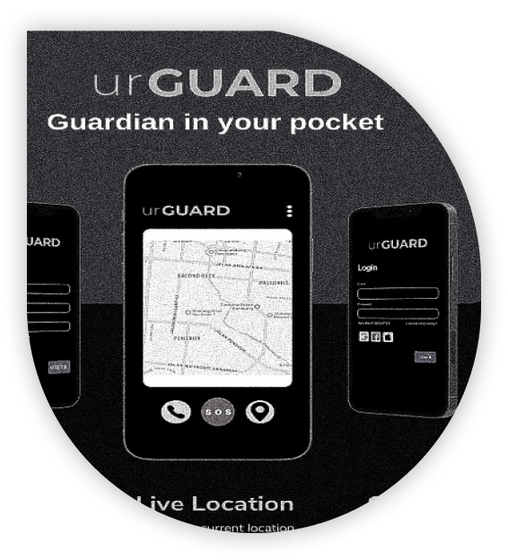
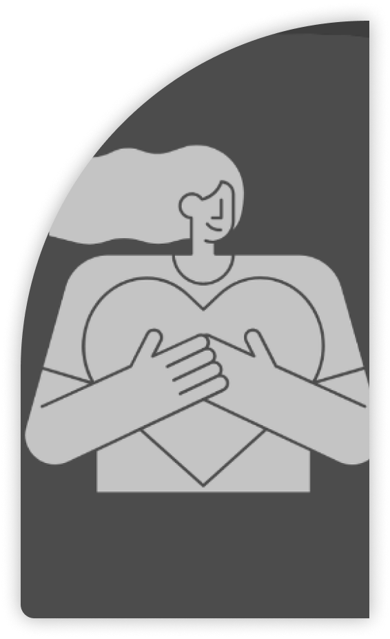

Go to project details here


UrGuard is the result of a collaborative effort with my teammates Tara, Faishal, and Ilham, developed as part of a school project over the course of seven days. This application is designed to enhance personal safety in sparsely populated public places, offering a range of features to provide peace of mind when navigating such environments.
UrGuard,
Guardian in Your
Pocket
Guardian in Your